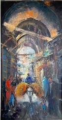

Home
Recent News
New Pieces from Baltimore
We acquired this piece and another piece from Patrice Jones, a lover of Manucher's paintings from Baltimore. Both paintings can be viewed in the gallery. We love the rich colors and detailed scenery displayed in this pair of paintings.